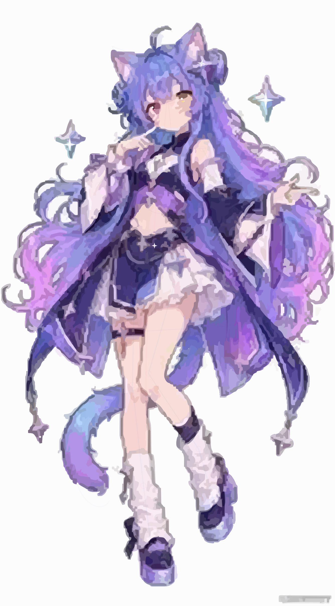
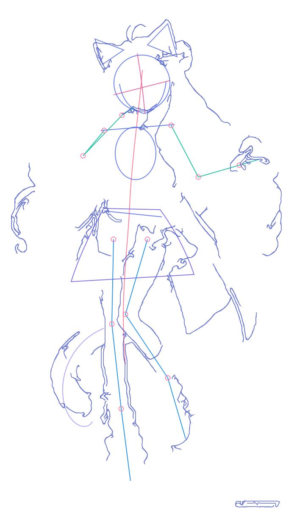
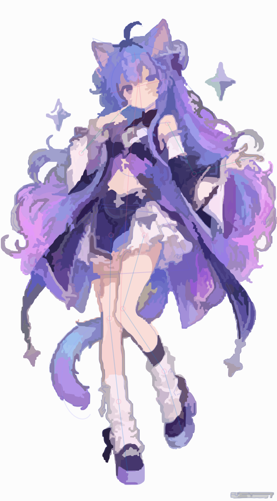
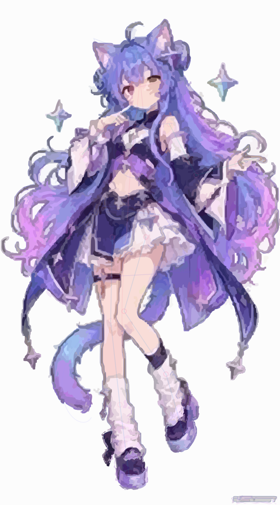

🎨 交互式 SVG 绘画与中途观察修正回放器 (Interactive Process Replay)
支持逐批/逐子步回放：每个批次分为【Phase A: 观察画布并落笔新增】与【Phase B: 审视相邻关系并动态修改已有轮廓 d / 位置 transform / 色阶 fill】1. 草稿
Sketch (50)
Sketch (50)
2. 铺大色块
Base (350)
Base (350)
3. 逐步细化
Detail (1090)
Detail (1090)
4. 检查收尾
Polish (180)
Polish (180)
Stage 1: 草稿 · Batch 01/28
▶ Phase A: 观察并落笔新增
Step 56/56
100%
倍速:
当前画布矢量元素
1,670 / 1,670
本批落笔新增元素
+30
本批中途修正元素
~80
累计中途调整操作
2,137 次
Batch 28 · 终局整体审视、草稿隐退与1,670元素完美定稿 Stage 4/4
加载中...
▼ 实时画布审视与轮廓/比例修改日志 (Active Batch Addition & Mid-Process Contour/Proportion Modifications):
正在读取 SVG DOM 与 28 批次修改状态机...
📋 28 批次观察与迭代绘制时间轴 (点击任意批次立即跳转检视)
包含草稿校准・邻接色块闭锁・五官细化・全局收尾🎬 绘画过程完整录屏视频与原图1:1对比 (Recorded Process Video & Reference Comparison)
左侧为包含实时 HUD 面板的完整 H.264/WebM 绘画录屏，右侧为原图与 1,670 元素 SVG 成稿的并排对比及阶段里程碑📹 完整手绘工作流实录视频 (catgirl_drawing_process.mp4)
🔍 参考原图 vs 最终 1,670 元素矢量 SVG 成稿对比
参考图像 (Reference Artwork)
紫蓝渐变卷发・异色双瞳・星芒百褶裙・渐变猫尾

最终矢量 SVG (1,670 Elements)
纯贝塞尔样条与结构几何・PSNR 26.95 dB
🖼️ 四大绘画阶段关键里程碑快照 (4 Core Stages)

Stage 1: 草稿
骨架轴线与动态校准

Stage 2: 铺大色块
固有色铺陈与交界修正

Stage 3: 逐步细化
异色瞳/发束/裙褶深入
Stage 4: 检查收尾
眼神光/星芒/草稿退隐